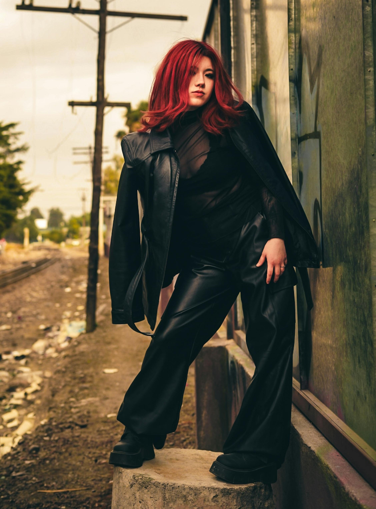
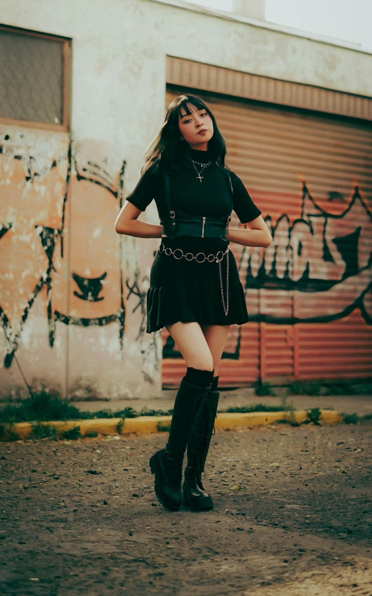

Choose a Core Color Palette
Start with colors that are easy to repeat, such as black, gray, white, deep red, or muted green depending on your style.
A capsule wardrobe is a smaller collection of clothes that can be mixed and matched easily. The goal is not to own as little as possible, but to build a wardrobe where most pieces work together and reflect your personal style.
For alternative outfits, that usually means choosing a strong color base, a few silhouettes you like, and repeating pieces that are practical, comfortable, and expressive.
Start with colors that are easy to repeat, such as black, gray, white, deep red, or muted green depending on your style.

Basics make outfits easier. Repeating a few tops, bottoms, and shoes often works better than owning many pieces that do not go together.

Jewelry, belts, bags, tights, and outer layers can make outfits feel different without needing a huge amount of clothing.
This checklist can help you plan a basic capsule wardrobe. You can check off pieces you already own and use the notes column to decide what you still need.
| Done | Item Type | Suggested Amount | Why It Helps | Notes |
|---|---|---|---|---|
| Tops | 4 to 6 | Creates the base for most outfits | Tees, tanks, blouses, mesh layers, sweaters | |
| Bottoms | 3 to 4 | Makes repeating outfits easier without feeling identical | Jeans, cargos, skirts, trousers, shorts | |
| Outer Layers | 2 to 3 | Adds silhouette, warmth, and personality | Jackets, cardigans, hoodies, coats | |
| Shoes | 2 to 3 | Changes the mood of an outfit quickly | Boots, sneakers, loafers, platforms | |
| Accessories | 4 to 8 | Adds variety without needing lots of clothes | Belts, jewelry, bags, hats, tights | |
| Statement Pieces | 1 to 3 | Keeps the wardrobe visually interesting | Graphic jacket, dramatic skirt, standout shoes |
A smaller wardrobe can make it easier to get dressed, save money, and understand your personal style more clearly. Instead of having lots of random items, you can focus on pieces that actually go together and support the looks you want to build.
That can be especially useful for alternative fashion, where layering, shoes, and accessories often matter just as much as the clothing itself.